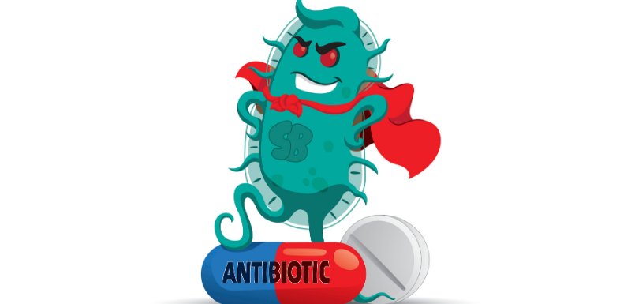

Développement d'antibiorésistance, c'est quoi, comment et pourquoi ? Accueil Page 3
(Selon l'Anses) : les antibiotiques sont des substances luttant contre les bactéries responsables
d'infections et ont commencé à être utilisés à grande échelle après la Seconde Guerre mondiale.
Ils ont permis des avancées médicales majeures, permettant de traiter
des maladies jusqu'alors incurables et d'augmenter l'espérance de vie
humaine de plus de dix ans. Mais leur usage fréquent et
parfois injustifié (traitements trop courts, trop longs, doses
inadaptées), tant en médecine humaine que vétérinaire a favorisé
l'apparition de bactéries résistantes à ces traitements, en
sélectionnant des souches capables de survivre aux
antibiotiques. Aujourd'hui de nombreuses bactéries résistent à
plusieurs antibiotiques (multirésistances). Ce phénomène remet en
cause l'efficacité des traitements disponibles et menace la
santé humaine et animale. Dans certaines situations, plus aucun
antibiotique n'est efficace contre une bactérie, ce qui conduit à
des impasses thérapeutiques. (Selon le manuel) : l'antibiorésistance constitue sans doute un de
défis médicaux majeurs du XXIe siècle : l'Union européenne estime à 25 000 le nombre de décès
par an imputables au phénomène d'antibiorésistance.
